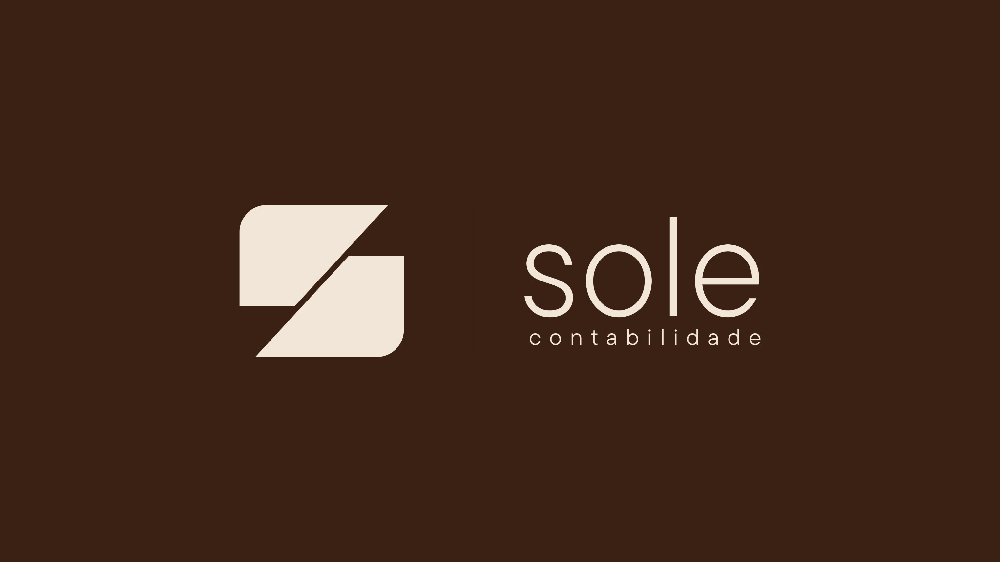
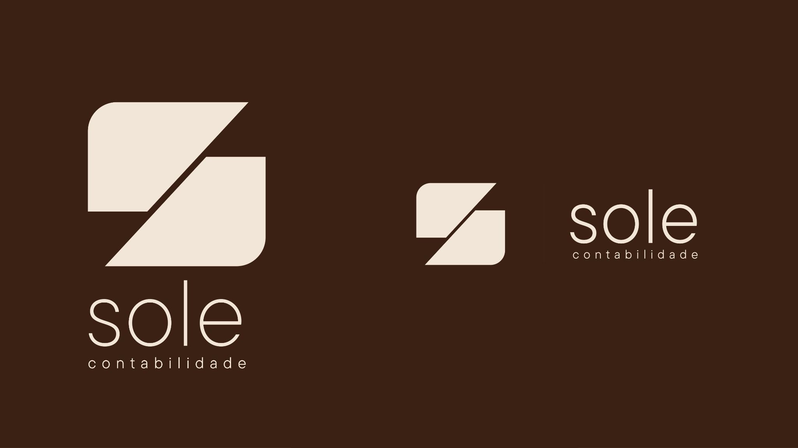
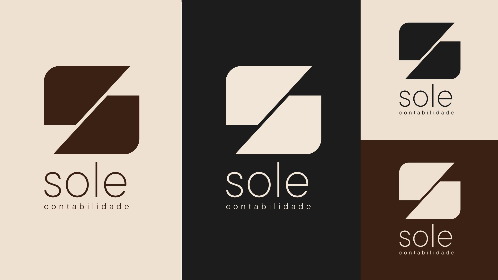
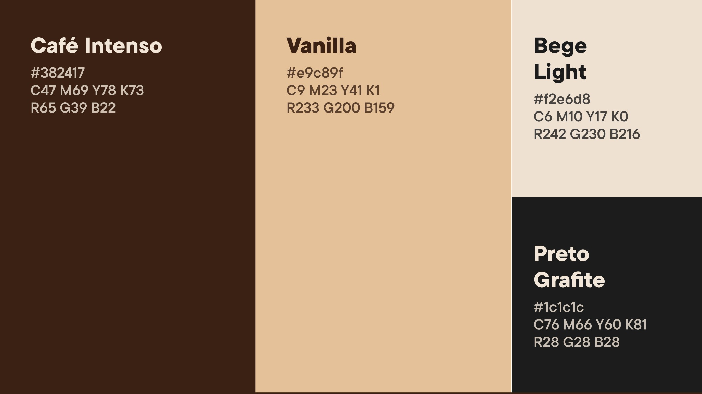
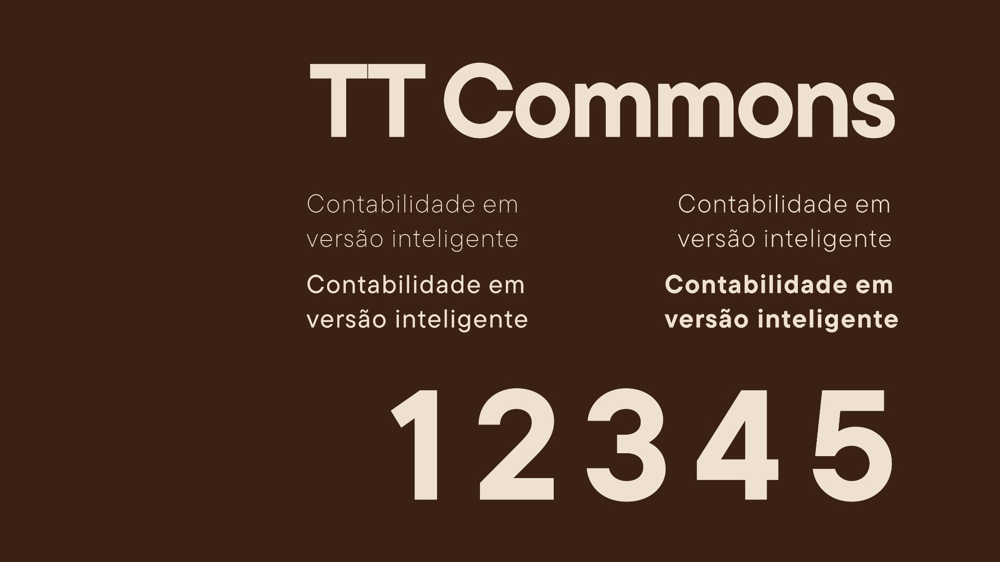
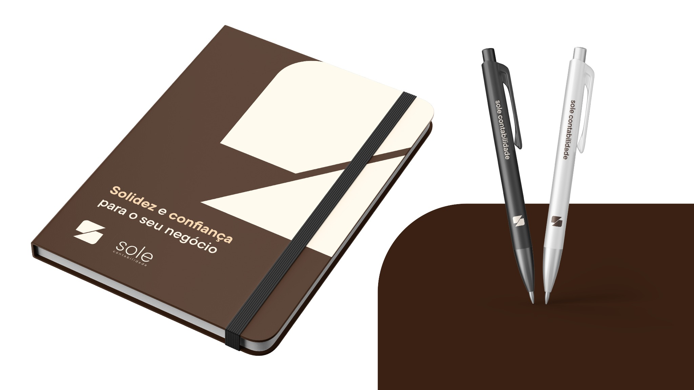
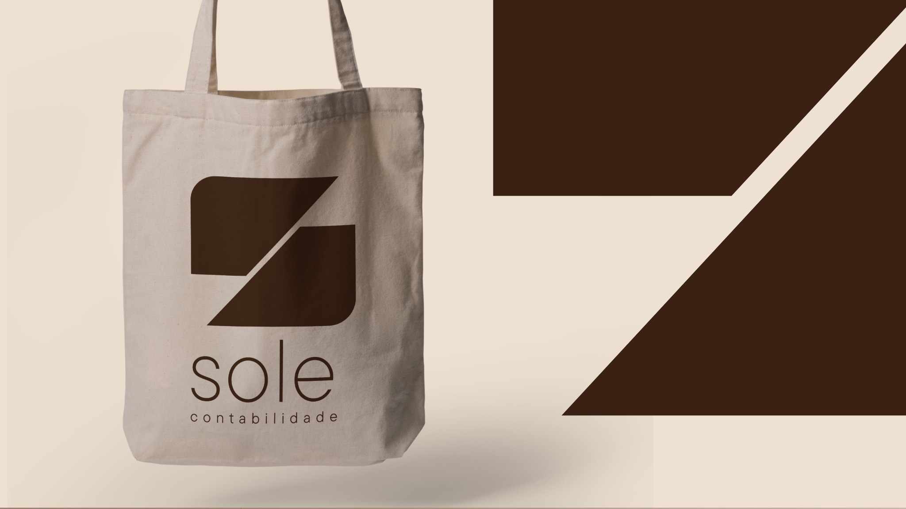
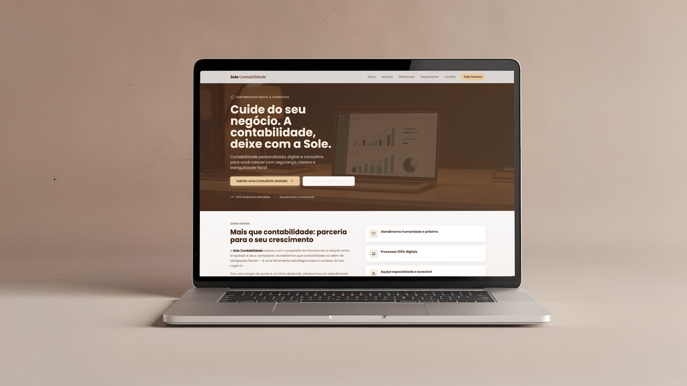
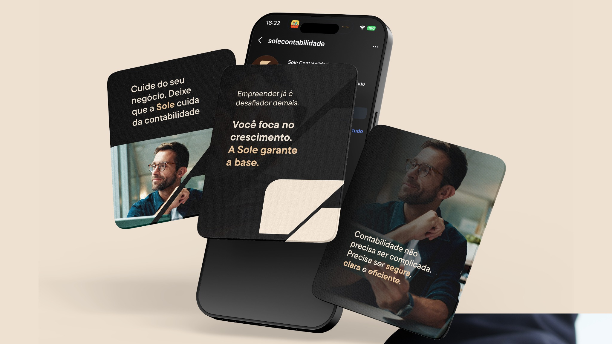
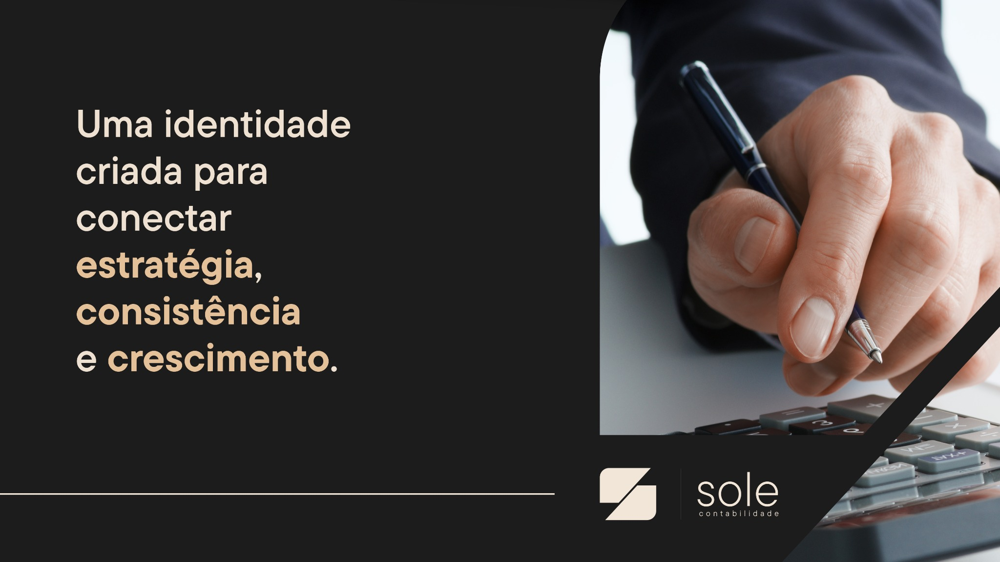

Conexão
Aproximar pessoas, negócios e oportunidades por meio de uma marca humana e próxima.
02 — Sole Contabilidade

Contexto
A Sole nasceu com o propósito de transformar estratégia em conexões, unindo pessoas, negócios e oportunidades por meio de uma marca sólida, contemporânea e memorável.
O desafio foi desenvolver uma identidade visual capaz de traduzir esses valores em um sistema consistente, versátil e preparado para diferentes pontos de contato.
Objetivo & conceito
O projeto teve como objetivo construir uma identidade visual que transmitisse profissionalismo, proximidade e confiança, fugindo dos clichês do mercado e criando uma marca capaz de crescer junto com o negócio.
A identidade foi construída a partir de três ideias centrais: conexão, crescimento e direção. Formas geométricas, equilíbrio visual e uma linguagem contemporânea transformam esses conceitos em um sistema consistente e reconhecível.
Aproximar pessoas, negócios e oportunidades por meio de uma marca humana e próxima.
Transformar decisões visuais em posicionamento claro, coerente e preparado para gerar valor.
Construir um sistema flexível, capaz de acompanhar novos contextos e o crescimento do negócio.
Transmitir solidez e profissionalismo sem recorrer à estética conservadora do setor contábil.
Sistema visual
A identidade foi construída a partir de formas geométricas, equilíbrio visual e uma lógica de composição capaz de sustentar a marca do símbolo às aplicações digitais.




Aplicações



Digital
O sistema também foi levado para a presença digital da Sole, mantendo a mesma relação entre clareza, confiança e contemporaneidade na landing page e na comunicação para redes sociais.



Resultado
A Sole passou a contar com um sistema visual capaz de manter reconhecimento entre materiais institucionais, aplicações físicas, presença digital e comunicação para redes sociais.
Contato
Projeto, oportunidade profissional ou uma boa troca sobre design — escolha o canal que fizer mais sentido.